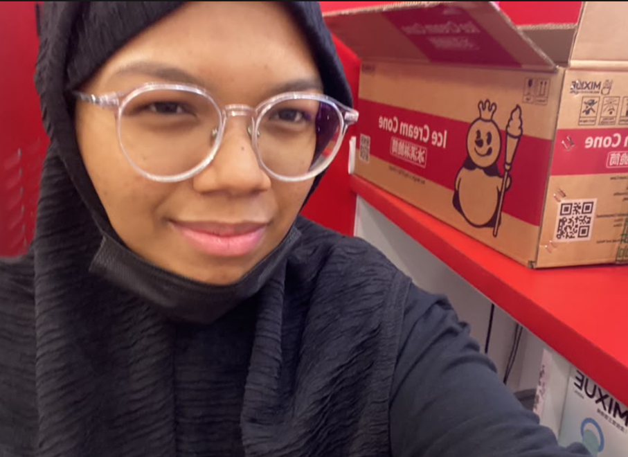
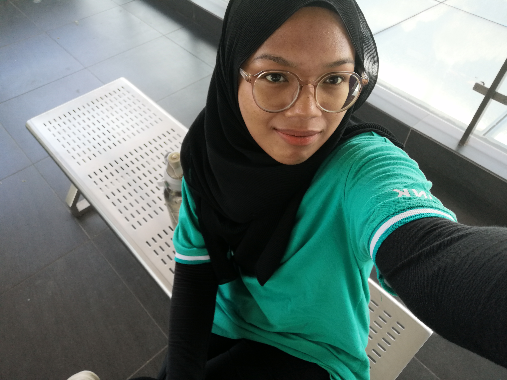

🛠 Skills & Experience 🛠
💼 Working Experience
Mixue Outlet
 Barista & Service CrewPart-Time Experience (2025) During my employment at Mixue, I was responsible for crafting beverages according to SOP, maintaining counter hygiene, and handling transactions efficiently.
We Drink Outlet
 Barista & Bakery AssistantPart-Time Experience (2024) At We Drink, I learned vital f&b skills including crafting complex beverages and assisting in displaying fresh baked goods and bread daily for customers. |
✨ Capabilities & SkillsMy Personal ExpertiseThroughout my academic studies and real-world working experiences, I have equipped myself with several valuable computer technical abilities and vital interpersonal soft skills: 💻 Technical Abilities:
💬 Interpersonal Traits:
|